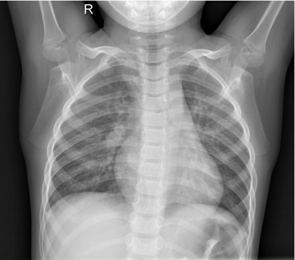
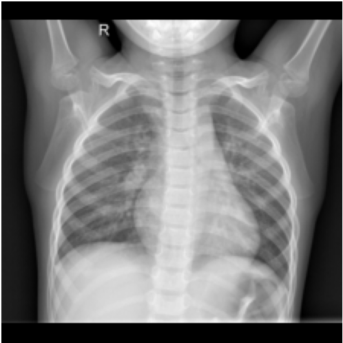
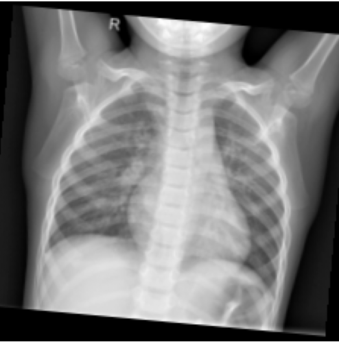
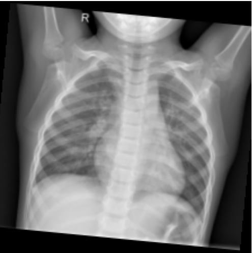
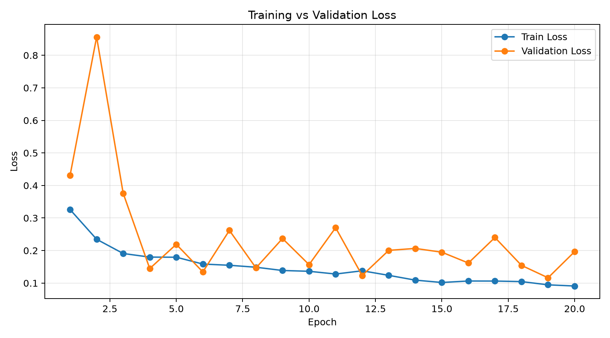
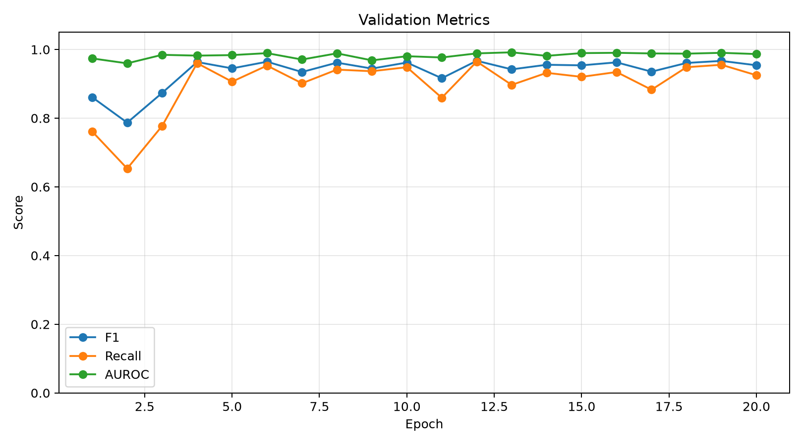
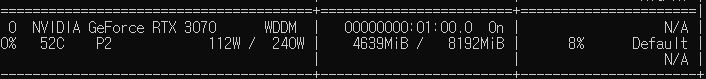
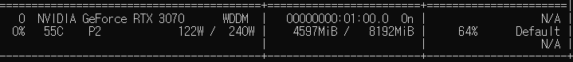

Preprocessing · Data Pipeline · Scratch ResNet-50

소아 흉부 X-ray에서 폐렴 여부 이진 분류
ResNet-50 Scratch와 Transfer Learning 비교
Grad-CAM++를 이용한 판단 근거 시각화
기존 Train / Validation / Test 구조와 파일명 패턴 확인
동일 환자로 추정되는 이미지를 하나의 Group으로 관리
StratifiedGroupKFold 기반 Train / Val / Test 재구성
Split 간 Group 중복이 없음을 확인
재구성한 Split 정보와 각 이미지 경로를 CSV 파일로 저장해 이후 학습 Pipeline에서 사용할 수 있도록 구성했습니다.
224×224로 강제 Resize하면 영상의 비율이 변하면서 흉곽과 폐의 형태가 왜곡될 수 있습니다.



동일한 X-ray에 전처리 Pipeline을 적용하여 원본 비율을 유지하면서 모델 입력 크기를 통일했습니다.
어떤 이미지를 사용할지와 정답 Label, Split 정보를 확인합니다.
group_split.csvCSV에 저장된 경로를 이용해 실제 X-ray 이미지와 Label을 가져옵니다.
dataset.pyResize, Padding, Rotation, Normalization을 적용합니다.
transforms.py전처리가 끝난 이미지 여러 장을 하나의 Batch로 묶어 모델에 공급합니다.
dataloader.pyX-ray 32장을 한 번에 모델로 전달
ImageNet 사전학습 Weight 없이 Random Initialization부터 학습
이후 Transfer Learning 모델과 구조를 동일하게 유지
Transfer Learning 적용 전 Scratch 모델의 1차 성능 확인
모델, Optimizer, Learning Rate, Batch Size 등 실험 설정 저장
Epoch별 Train / Validation Loss와 평가 지표 저장
Validation F1-score가 가장 높은 Checkpoint 자동 저장
Loss와 Validation Metric의 변화를 그래프로 시각화
반복되는 실험에서 어떤 설정으로 어떤 결과가 나왔는지 추적할 수 있도록 자동 저장 구조를 구성했습니다.
본격적인 20 Epoch 학습에 앞서 1 Epoch만 실행하여 전체 과정이 정상적으로 연결되는지 확인했습니다.
Smoke Test로 전체 Pipeline의 정상 동작을 확인한 뒤, 위 조건으로 20 Epoch 1차 Baseline 학습을 진행했습니다.


학습이 진행되면서 Train Loss는 지속적으로 감소
Validation Loss와 Metric에서 Epoch별 변동 확인
Learning Rate와 학습 설정에 따른 변화 추가 확인 예정


학습 중 GPU 사용률이 지속적으로 유지되지 않는 구간 확인
Image Loading과 Transform이 Main Process에서 순차적으로 수행
DataLoader 설정을 조정하면서 GPU 사용률과 Epoch 시간을 비교할 예정
Learning Rate 및 DataLoader 설정 추가 실험
ImageNet Pretrained ResNet-50 학습 진행
Scratch와 Transfer Learning 성능 비교
최종 모델 Test 평가 및 Grad-CAM++ 적용
202544030 이현서